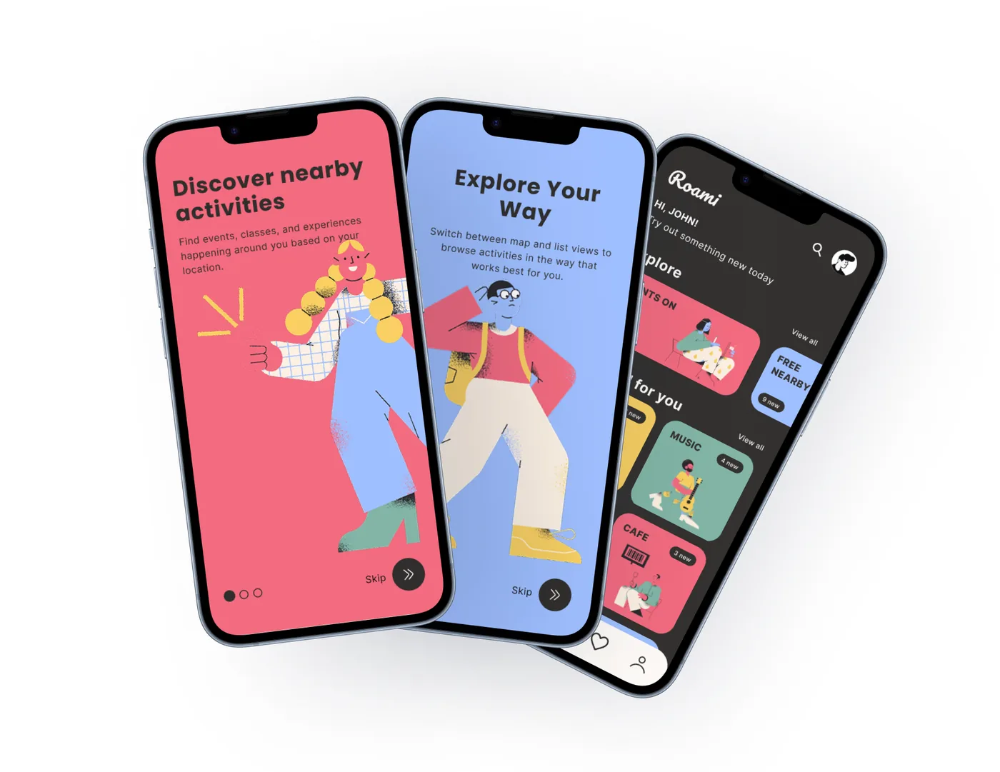
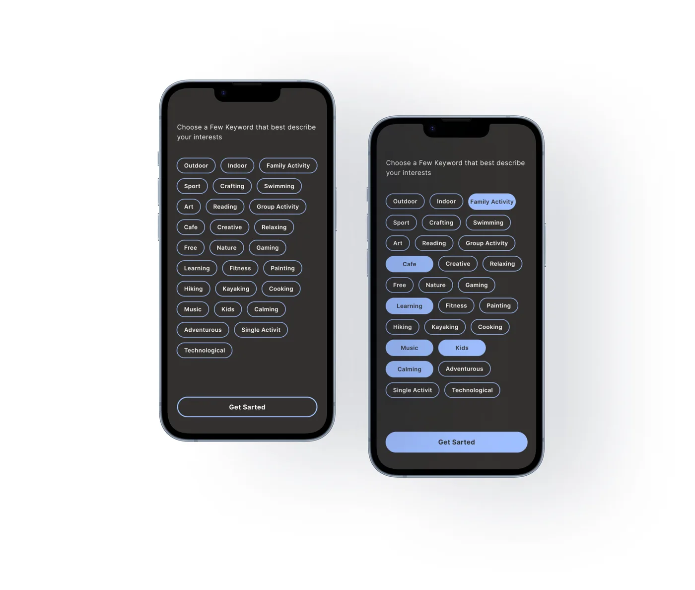
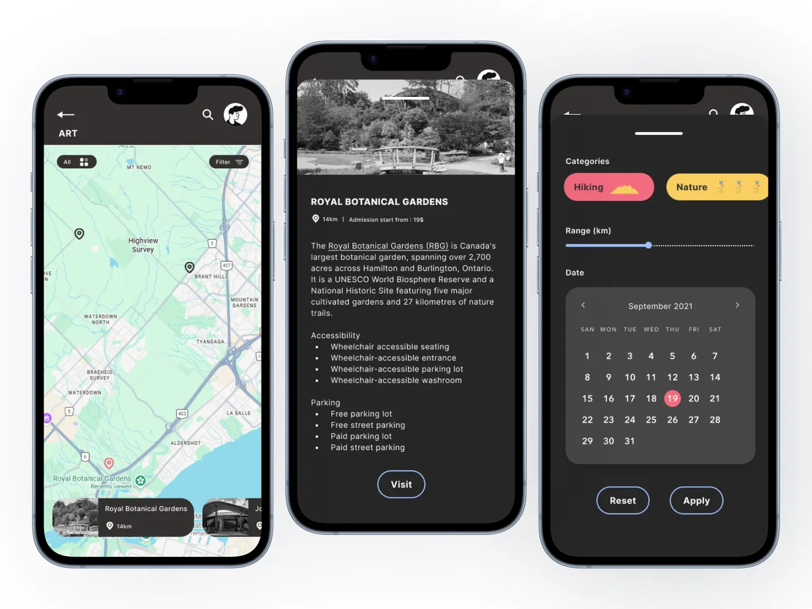
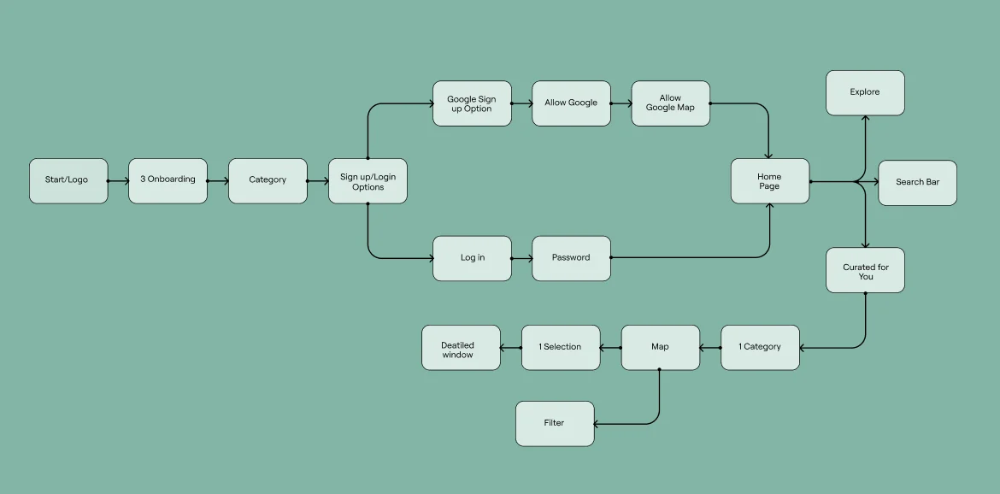
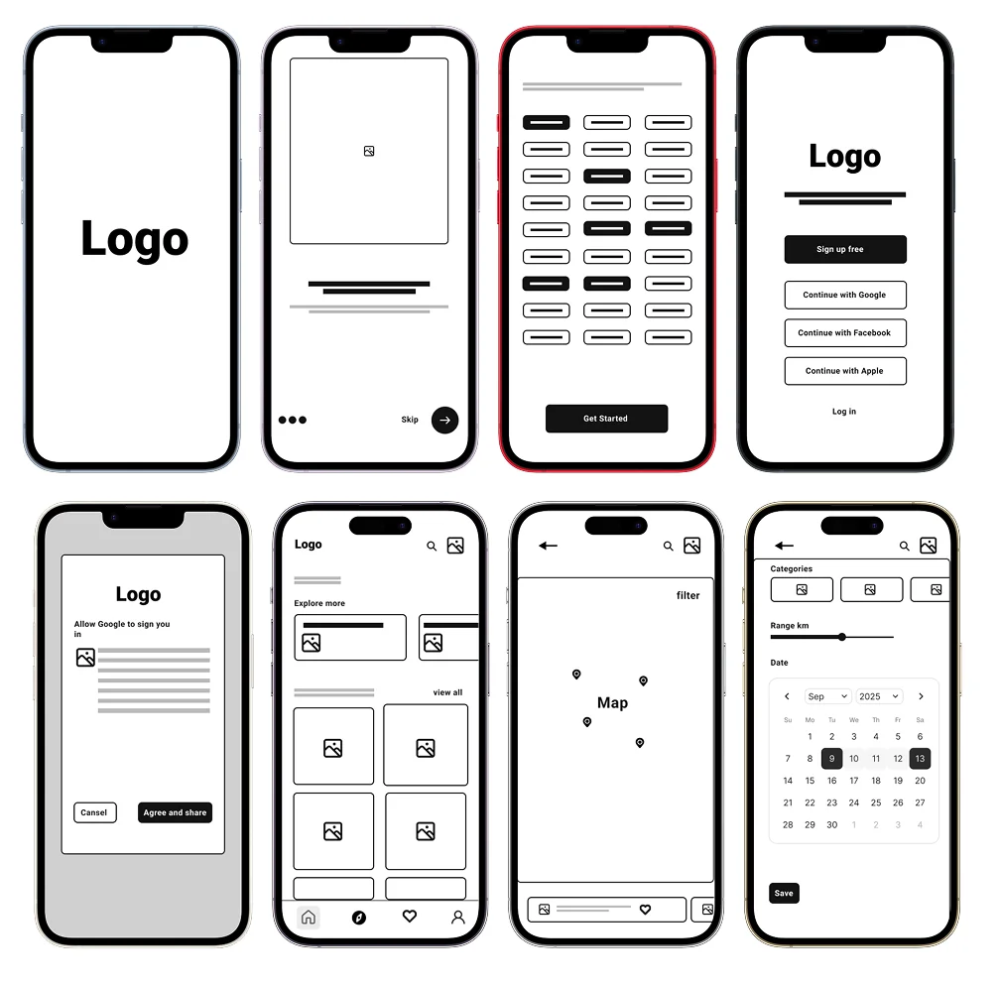
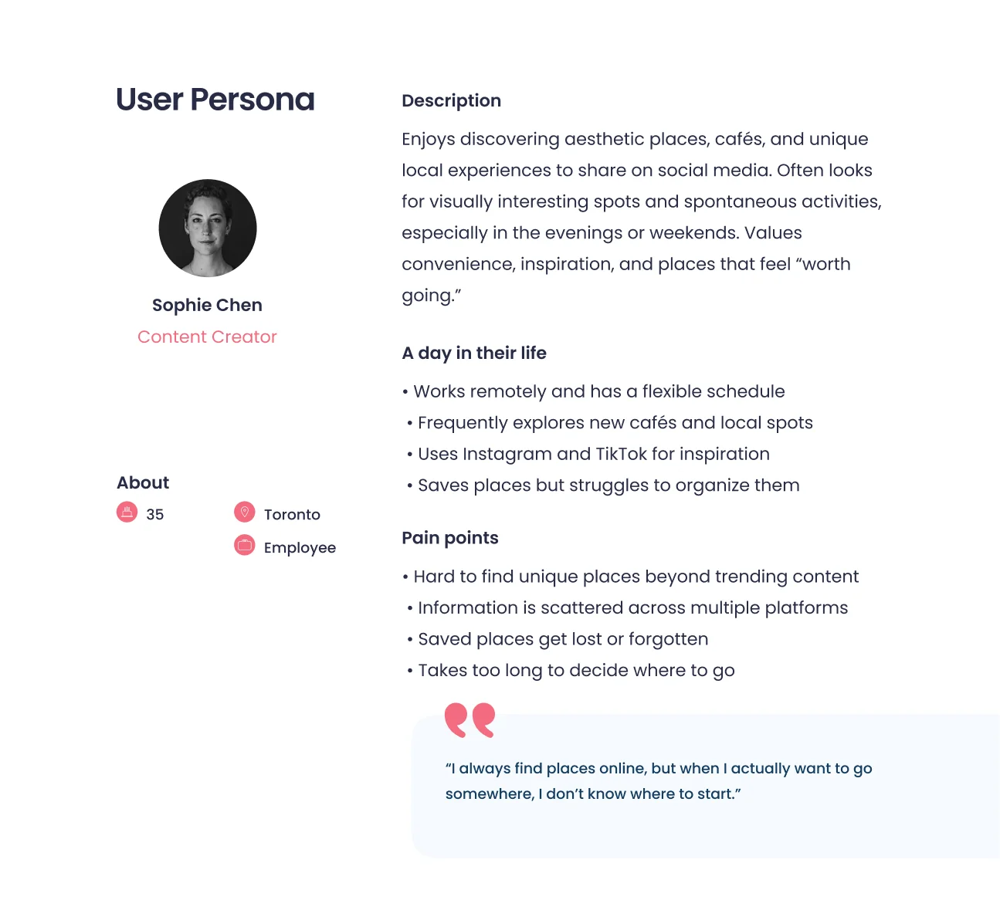
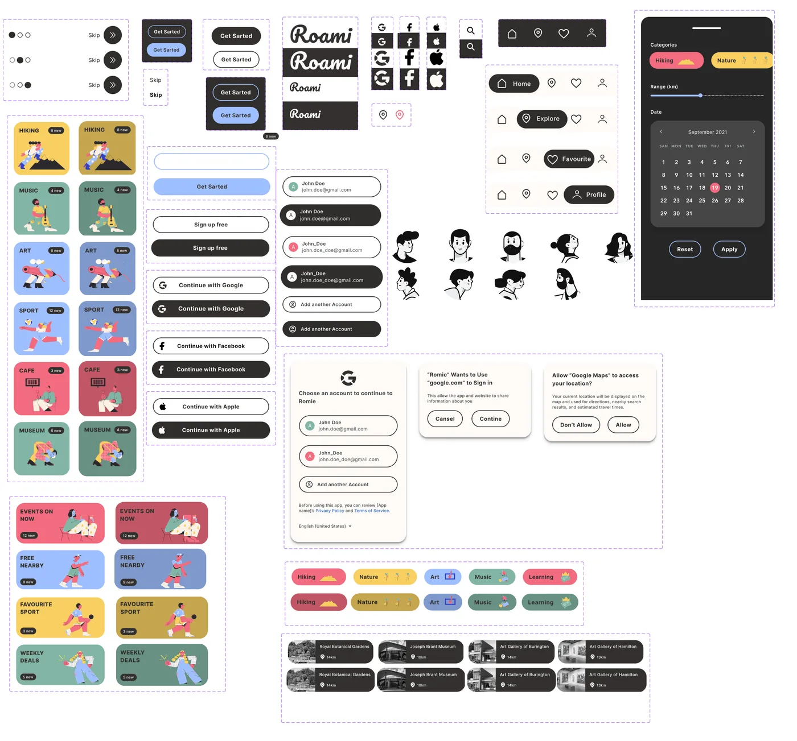
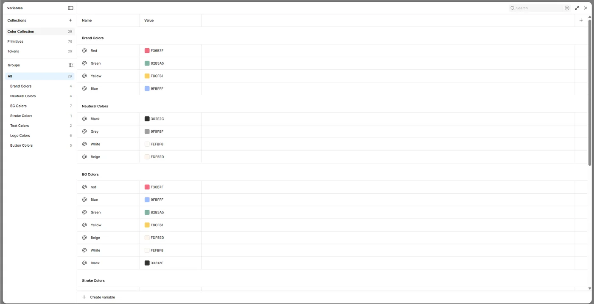
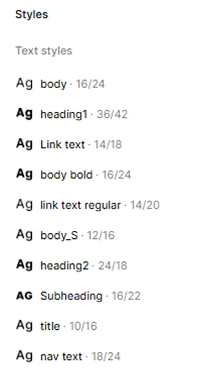

Roami
A concept app that helps people find things to do nearby and decide quickly.
Try the prototype
Finding something to do should not feel like work.
I started by exploring Hobbie, an app for finding activities. I found three problems in the first-time experience:
- The onboarding did not explain the value of the app.
- The map felt secondary and hard to use.
- Discovery relied on browsing, with no clear categories.
This makes discovery confusing, especially for new users. I looked at Canoo and Google Maps for direction.
My goal: make finding activities simple and natural, so people get quick inspiration without information overload.
Three decisions to make discovery easier.
Clear onboarding
Three short screens explain the app: discover nearby activities, book in seconds, explore your way. Nothing extra, so people feel confident before they start.

Interest-based setup
People pick the categories they like first. Then the app shows a focused list instead of every possible option.

Map and list, together
People can switch between the map and activity cards. The map shows what is nearby. The cards make it easy to scan and compare.

From a Hobbie review to a full mobile flow.
I designed the whole flow: onboarding, category selection, home, map and booking. Canoo also showed me how to use a dark background without hurting readability.
Research
Studied how people find activities in existing apps, and where they get stuck.
Flow
Defined a simple journey: discover, explore, save, decide.
Wireframe
Tested structure, hierarchy and navigation in low fidelity.
Design
Built clean screens with strong imagery, then refined the transitions and actions.


Checking the idea with a persona.
I created Sophie Chen, 35, a content creator in Toronto. She finds new places online, but struggles to choose and organize them. Her needs pointed to four things:
- Visual content works better than text-heavy lists.
- Saving options is essential.
- Too many filters reduce engagement.
- Fast, simple navigation is critical.
These findings shaped the simple structure and the card-based design.

See it in motion.
This is the clickable prototype. Open it in Figma to try the full flow yourself.
A small design system keeps it consistent.
Colours, type and spacing are set as variables, so one change updates every screen. Cards, buttons, navigation and category tags are reusable components that follow the same rules.



From "I don't know where to go" to "I found something".
Most discovery apps focus on either maps or reviews. Roami brings inspiration, organization and decision-making into one simple flow, in just a few steps.
What this shows: I can take an idea from research to a full prototype and design system in three weeks. Next, I would test it with real users.
I'm open to AI creative technologist, forward deployed creative and AI product design roles, and to collaborations.
Get in touchOr email me directly at gulnar.rza.e@gmail.com, or connect on LinkedIn.